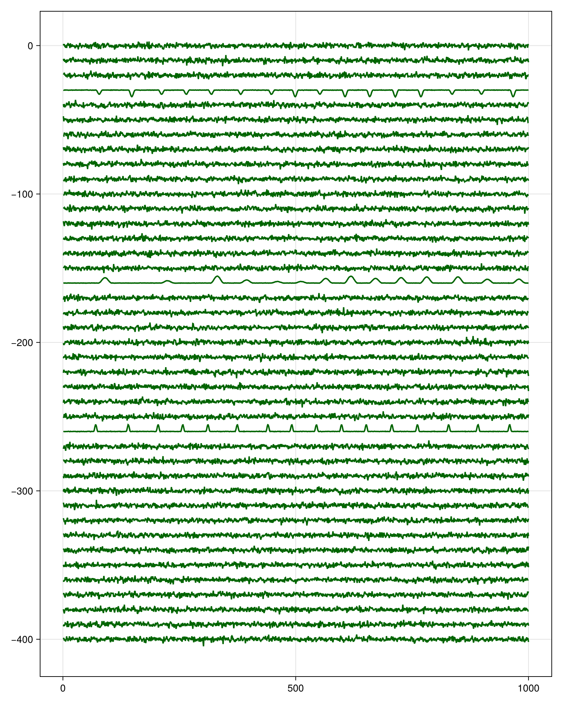
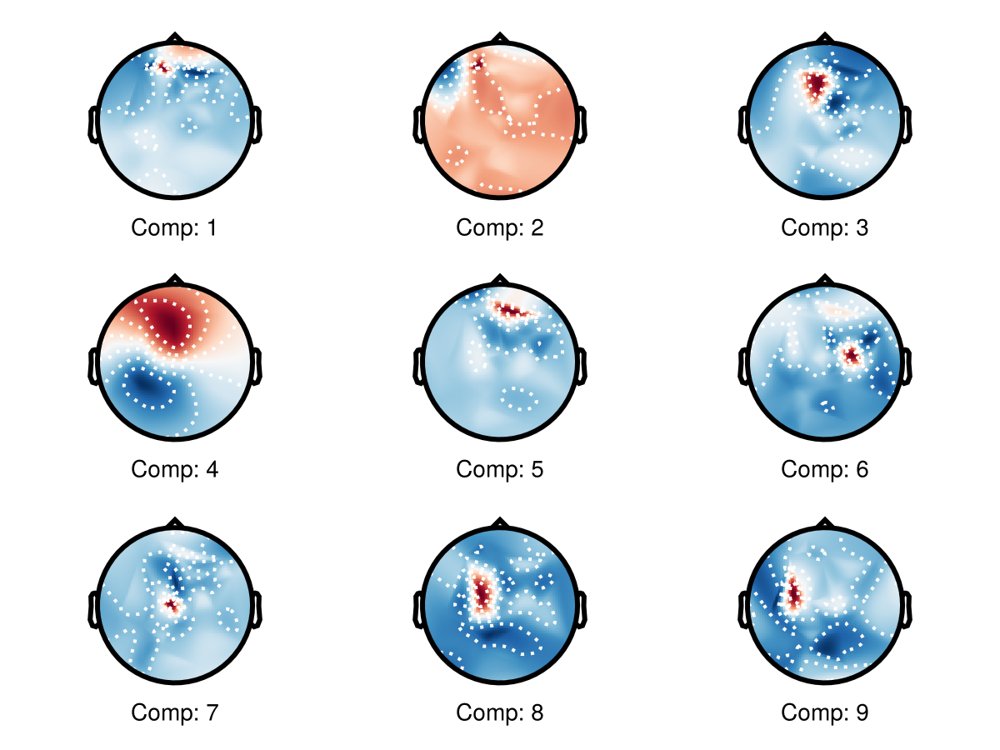

EEG Tutorial
This tutorial shows an EEG-style workflow with Amica.jl
Setup and Channel Selection
using Amica
using UnfoldSim
using CairoMakie
using UnfoldMakie
hart = Hartmut() # headmodel used in UnfoldSim simulation
ch_ix = findall(
l -> l in lowercase.(UnfoldMakie.TopoPlots.CHANNELS_10_05),
lowercase.(hart.electrodes["label"]),
)[1:4:end] # don't use all channels to speed up calculationPlease cite: HArtMuT: Harmening Nils, Klug Marius, Gramann Klaus and Miklody Daniel - 10.1088/1741-2552/aca8ceSimulate EEG and Fit AMICA
Note that in difference to e.g. eeglab, or Unfold.jl, we need samples x channels in Amica.jl. Transpose if necessary!
eeg, evts = UnfoldSim.predef_eeg(; multichannel=true)
eeg = eeg[ch_ix, 1:10_000]' # sample x channel
model_sim = fit(
SingleModelAmica,
Float32.(eeg);
maxiter=500,
sort_by_variance=true,
)Please cite: HArtMuT: Harmening Nils, Klug Marius, Gramann Klaus and Miklody Daniel - 10.1088/1741-2552/aca8ce
◐ Progress: Time: 0:00:01 ( 0.57 s/it)
iter: 2
LL: 0.255564
lrate: 0.1
◓ Progress: Time: 0:00:01 ( 0.24 s/it)
iter: 7
LL: 0.25741538
lrate: 0.1
◑ Progress: Time: 0:00:01 ( 0.20 s/it)
iter: 9
LL: 0.25757143
lrate: 0.1
◒ Progress: Time: 0:00:01 ( 0.18 s/it)
iter: 11
LL: 0.25773385
lrate: 0.1
◐ Progress: Time: 0:00:02 ( 0.16 s/it)
iter: 13
LL: 0.2579201
lrate: 0.1
◓ Progress: Time: 0:00:02 ( 0.15 s/it)
iter: 15
LL: 0.258148
lrate: 0.1
◑ Progress: Time: 0:00:02 ( 0.14 s/it)
iter: 17
LL: 0.25844264
lrate: 0.1
◒ Progress: Time: 0:00:02 ( 0.13 s/it)
iter: 19
LL: 0.25884086
lrate: 0.1
◐ Progress: Time: 0:00:02 ( 0.13 s/it)
iter: 21
LL: 0.259402
lrate: 0.1
◓ Progress: Time: 0:00:02 ( 0.12 s/it)
iter: 23
LL: 0.26022896
lrate: 0.1
◑ Progress: Time: 0:00:02 ( 0.12 s/it)
iter: 25
LL: 0.26150328
lrate: 0.1
◒ Progress: Time: 0:00:03 ( 0.11 s/it)
iter: 27
LL: 0.26359263
lrate: 0.1
◐ Progress: Time: 0:00:03 ( 0.11 s/it)
iter: 29
LL: 0.26731905
lrate: 0.1
◓ Progress: Time: 0:00:03 ( 0.11 s/it)
iter: 31
LL: 0.27500582
lrate: 0.1
◑ Progress: Time: 0:00:03 ( 0.10 s/it)
iter: 33
LL: 0.28931606
lrate: 0.1
[ Info: Likelihood decreasing!
◒ Progress: Time: 0:00:04 ( 0.13 s/it)
iter: 35
LL: 0.2958629
lrate: 0.05
[ Info: Likelihood decreasing!
◐ Progress: Time: 0:00:04 ( 0.13 s/it)
iter: 37
LL: 0.27536464
lrate: 0.1
[ Info: Likelihood decreasing!
◓ Progress: Time: 0:00:04 ( 0.13 s/it)
iter: 39
LL: 0.27805814
lrate: 0.05
[ Info: Likelihood decreasing!
◑ Progress: Time: 0:00:05 ( 0.12 s/it)
iter: 41
LL: 0.26886898
lrate: 0.05
◒ Progress: Time: 0:00:05 ( 0.12 s/it)
iter: 43
LL: 0.2848992
lrate: 0.05
◐ Progress: Time: 0:00:05 ( 0.12 s/it)
iter: 45
LL: 0.30081078
lrate: 0.05
[ Info: Likelihood decreasing!
[ Info: Likelihood decreasing!
◓ Progress: Time: 0:00:05 ( 0.12 s/it)
iter: 47
LL: 0.25284725
lrate: 0.025
◑ Progress: Time: 0:00:05 ( 0.11 s/it)
iter: 49
LL: 0.2991009
lrate: 0.025
[ Info: Starting Newton ... setting numdecs to 0
◒ Progress: Time: 0:00:05 ( 0.12 s/it)
iter: 50
LL: 0.3022929
lrate: 0.05
◐ Progress: Time: 0:00:06 ( 0.12 s/it)
iter: 52
LL: 0.3039344
lrate: 0.2
◓ Progress: Time: 0:00:06 ( 0.11 s/it)
iter: 54
LL: 0.30496025
lrate: 0.4
◑ Progress: Time: 0:00:06 ( 0.11 s/it)
iter: 56
LL: 0.30635616
lrate: 0.5
◒ Progress: Time: 0:00:06 ( 0.11 s/it)
iter: 58
LL: 0.3087018
lrate: 0.5
◐ Progress: Time: 0:00:06 ( 0.11 s/it)
iter: 60
LL: 0.31292486
lrate: 0.5
◓ Progress: Time: 0:00:06 ( 0.11 s/it)
iter: 62
LL: 0.32003483
lrate: 0.5
◑ Progress: Time: 0:00:06 ( 0.11 s/it)
iter: 64
LL: 0.33029205
lrate: 0.5
◒ Progress: Time: 0:00:06 ( 0.11 s/it)
iter: 66
LL: 0.33584717
lrate: 0.5
◐ Progress: Time: 0:00:07 ( 0.10 s/it)
iter: 68
LL: 0.33635786
lrate: 0.5
◓ Progress: Time: 0:00:07 ( 0.10 s/it)
iter: 70
LL: 0.33644664
lrate: 0.5
◑ Progress: Time: 0:00:07 ( 0.10 s/it)
iter: 72
LL: 0.33650106
lrate: 0.5
◒ Progress: Time: 0:00:07 ( 0.10 s/it)
iter: 74
LL: 0.3365495
lrate: 0.5
◐ Progress: Time: 0:00:07 ( 0.10 s/it)
iter: 76
LL: 0.3365977
lrate: 0.5
◓ Progress: Time: 0:00:07 ( 0.10 s/it)
iter: 78
LL: 0.33664802
lrate: 0.5
◑ Progress: Time: 0:00:07 (99.41 ms/it)
iter: 80
LL: 0.33670172
lrate: 0.5
◒ Progress: Time: 0:00:08 (98.65 ms/it)
iter: 82
LL: 0.33676013
lrate: 0.5
◐ Progress: Time: 0:00:08 (97.94 ms/it)
iter: 84
LL: 0.33682668
lrate: 0.5
◓ Progress: Time: 0:00:08 (97.26 ms/it)
iter: 86
LL: 0.33690527
lrate: 0.5
◑ Progress: Time: 0:00:08 (96.61 ms/it)
iter: 88
LL: 0.3370036
lrate: 0.5
◒ Progress: Time: 0:00:08 (95.99 ms/it)
iter: 90
LL: 0.33713624
lrate: 0.5
◐ Progress: Time: 0:00:08 (95.39 ms/it)
iter: 92
LL: 0.337334
lrate: 0.5
◓ Progress: Time: 0:00:08 (94.82 ms/it)
iter: 94
LL: 0.33766043
lrate: 0.5
◑ Progress: Time: 0:00:09 (94.27 ms/it)
iter: 96
LL: 0.3382704
lrate: 0.5
◒ Progress: Time: 0:00:09 (92.82 ms/it)
iter: 104
LL: 0.35891792
lrate: 0.5
◐ Progress: Time: 0:00:09 (92.35 ms/it)
iter: 106
LL: 0.37192288
lrate: 0.5
◓ Progress: Time: 0:00:09 (91.90 ms/it)
iter: 108
LL: 0.37527236
lrate: 0.5
◑ Progress: Time: 0:00:10 (91.47 ms/it)
iter: 110
LL: 0.37555724
lrate: 0.5
◒ Progress: Time: 0:00:10 (91.06 ms/it)
iter: 112
LL: 0.3756517
lrate: 0.5
◐ Progress: Time: 0:00:10 (90.66 ms/it)
iter: 114
LL: 0.37570563
lrate: 0.5
◓ Progress: Time: 0:00:10 (90.28 ms/it)
iter: 116
LL: 0.3757439
lrate: 0.5
◑ Progress: Time: 0:00:10 (89.91 ms/it)
iter: 118
LL: 0.37577462
lrate: 0.5
◒ Progress: Time: 0:00:10 (89.55 ms/it)
iter: 120
LL: 0.37580153
lrate: 0.5
◐ Progress: Time: 0:00:10 (89.21 ms/it)
iter: 122
LL: 0.37582585
lrate: 0.5
◓ Progress: Time: 0:00:11 (88.87 ms/it)
iter: 124
LL: 0.3758487
lrate: 0.5
◑ Progress: Time: 0:00:11 (88.55 ms/it)
iter: 126
LL: 0.3758705
lrate: 0.5
◒ Progress: Time: 0:00:11 (88.24 ms/it)
iter: 128
LL: 0.3758911
lrate: 0.5
◐ Progress: Time: 0:00:11 (87.94 ms/it)
iter: 130
LL: 0.37591106
lrate: 0.5
◓ Progress: Time: 0:00:11 (87.65 ms/it)
iter: 132
LL: 0.37593034
lrate: 0.5
◑ Progress: Time: 0:00:11 (87.37 ms/it)
iter: 134
LL: 0.37594885
lrate: 0.5
◒ Progress: Time: 0:00:11 (87.09 ms/it)
iter: 136
LL: 0.37596673
lrate: 0.5
◐ Progress: Time: 0:00:11 (86.82 ms/it)
iter: 138
LL: 0.3759843
lrate: 0.5
◓ Progress: Time: 0:00:12 (86.55 ms/it)
iter: 140
LL: 0.37600127
lrate: 0.5
◑ Progress: Time: 0:00:12 (86.30 ms/it)
iter: 142
LL: 0.37601802
lrate: 0.5
◒ Progress: Time: 0:00:12 (86.05 ms/it)
iter: 144
LL: 0.37603414
lrate: 0.5
◐ Progress: Time: 0:00:12 (85.82 ms/it)
iter: 146
LL: 0.37605
lrate: 0.5
◓ Progress: Time: 0:00:12 (85.58 ms/it)
iter: 148
LL: 0.3760657
lrate: 0.5
◑ Progress: Time: 0:00:12 (85.35 ms/it)
iter: 150
LL: 0.3760809
lrate: 0.5
◒ Progress: Time: 0:00:12 (85.13 ms/it)
iter: 152
LL: 0.37609595
lrate: 0.5
◐ Progress: Time: 0:00:13 (84.91 ms/it)
iter: 154
LL: 0.3761107
lrate: 0.5
◓ Progress: Time: 0:00:13 (84.70 ms/it)
iter: 156
LL: 0.3761252
lrate: 0.5
◑ Progress: Time: 0:00:13 (84.50 ms/it)
iter: 158
LL: 0.37613964
lrate: 0.5
◒ Progress: Time: 0:00:13 (84.30 ms/it)
iter: 160
LL: 0.37615374
lrate: 0.5
◐ Progress: Time: 0:00:13 (84.11 ms/it)
iter: 162
LL: 0.37616783
lrate: 0.5
◓ Progress: Time: 0:00:13 (83.92 ms/it)
iter: 164
LL: 0.37618154
lrate: 0.5
◑ Progress: Time: 0:00:13 (83.74 ms/it)
iter: 166
LL: 0.37619513
lrate: 0.5
◒ Progress: Time: 0:00:14 (83.56 ms/it)
iter: 168
LL: 0.37620845
lrate: 0.5
◐ Progress: Time: 0:00:14 (83.39 ms/it)
iter: 170
LL: 0.37622166
lrate: 0.5
◓ Progress: Time: 0:00:14 (83.22 ms/it)
iter: 172
LL: 0.37623444
lrate: 0.5
◑ Progress: Time: 0:00:14 (83.06 ms/it)
iter: 174
LL: 0.37624723
lrate: 0.5
◒ Progress: Time: 0:00:14 (82.90 ms/it)
iter: 176
LL: 0.37625974
lrate: 0.5
◐ Progress: Time: 0:00:14 (82.74 ms/it)
iter: 178
LL: 0.37627226
lrate: 0.5
◓ Progress: Time: 0:00:14 (82.59 ms/it)
iter: 180
LL: 0.37628445
lrate: 0.5
◑ Progress: Time: 0:00:15 (82.44 ms/it)
iter: 182
LL: 0.37629658
lrate: 0.5
◒ Progress: Time: 0:00:15 (82.29 ms/it)
iter: 184
LL: 0.37630862
lrate: 0.5
◐ Progress: Time: 0:00:15 (82.15 ms/it)
iter: 186
LL: 0.37632042
lrate: 0.5
◓ Progress: Time: 0:00:15 (82.00 ms/it)
iter: 188
LL: 0.37633207
lrate: 0.5
◑ Progress: Time: 0:00:15 (81.87 ms/it)
iter: 190
LL: 0.37634352
lrate: 0.5
◒ Progress: Time: 0:00:15 (81.73 ms/it)
iter: 192
LL: 0.3763546
lrate: 0.5
◐ Progress: Time: 0:00:15 (81.59 ms/it)
iter: 194
LL: 0.37636563
lrate: 0.5
◓ Progress: Time: 0:00:15 (81.46 ms/it)
iter: 196
LL: 0.3763765
lrate: 0.5
◑ Progress: Time: 0:00:16 (81.34 ms/it)
iter: 198
LL: 0.37638724
lrate: 0.5
◒ Progress: Time: 0:00:16 (81.21 ms/it)
iter: 200
LL: 0.37639752
lrate: 0.5
◐ Progress: Time: 0:00:16 (81.08 ms/it)
iter: 202
LL: 0.37640777
lrate: 0.5
◓ Progress: Time: 0:00:16 (80.96 ms/it)
iter: 204
LL: 0.37641785
lrate: 0.5
◑ Progress: Time: 0:00:16 (80.84 ms/it)
iter: 206
LL: 0.37642774
lrate: 0.5
◒ Progress: Time: 0:00:16 (80.72 ms/it)
iter: 208
LL: 0.3764372
lrate: 0.5
◐ Progress: Time: 0:00:16 (80.60 ms/it)
iter: 210
LL: 0.3764467
lrate: 0.5
◓ Progress: Time: 0:00:17 (80.49 ms/it)
iter: 212
LL: 0.376456
lrate: 0.5
◑ Progress: Time: 0:00:17 (80.38 ms/it)
iter: 214
LL: 0.37646508
lrate: 0.5
◒ Progress: Time: 0:00:17 (80.27 ms/it)
iter: 216
LL: 0.37647393
lrate: 0.5
◐ Progress: Time: 0:00:17 (80.17 ms/it)
iter: 218
LL: 0.37648278
lrate: 0.5
◓ Progress: Time: 0:00:17 (80.07 ms/it)
iter: 220
LL: 0.37649146
lrate: 0.5
◑ Progress: Time: 0:00:17 (79.97 ms/it)
iter: 222
LL: 0.37649992
lrate: 0.5
◒ Progress: Time: 0:00:17 (79.87 ms/it)
iter: 224
LL: 0.37650838
lrate: 0.5
◐ Progress: Time: 0:00:18 (79.87 ms/it)
iter: 226
LL: 0.37651655
lrate: 0.5
◓ Progress: Time: 0:00:18 (79.77 ms/it)
iter: 228
LL: 0.37652478
lrate: 0.5
◑ Progress: Time: 0:00:18 (79.67 ms/it)
iter: 230
LL: 0.3765327
lrate: 0.5
◒ Progress: Time: 0:00:18 (79.57 ms/it)
iter: 232
LL: 0.37654078
lrate: 0.5
◐ Progress: Time: 0:00:18 (79.47 ms/it)
iter: 234
LL: 0.37654856
lrate: 0.5
◓ Progress: Time: 0:00:18 (79.38 ms/it)
iter: 236
LL: 0.3765565
lrate: 0.5
◑ Progress: Time: 0:00:18 (79.28 ms/it)
iter: 238
LL: 0.37656426
lrate: 0.5
◒ Progress: Time: 0:00:19 (79.19 ms/it)
iter: 240
LL: 0.3765718
lrate: 0.5
◐ Progress: Time: 0:00:19 (79.10 ms/it)
iter: 242
LL: 0.37657946
lrate: 0.5
◓ Progress: Time: 0:00:19 (79.01 ms/it)
iter: 244
LL: 0.37658703
lrate: 0.5
◑ Progress: Time: 0:00:19 (78.92 ms/it)
iter: 246
LL: 0.37659463
lrate: 0.5
◒ Progress: Time: 0:00:19 (78.84 ms/it)
iter: 248
LL: 0.37660214
lrate: 0.5
◐ Progress: Time: 0:00:19 (78.76 ms/it)
iter: 250
LL: 0.37660944
lrate: 0.5
◓ Progress: Time: 0:00:19 (78.67 ms/it)
iter: 252
LL: 0.37661698
lrate: 0.5
◑ Progress: Time: 0:00:19 (78.59 ms/it)
iter: 254
LL: 0.37662446
lrate: 0.5
◒ Progress: Time: 0:00:20 (78.50 ms/it)
iter: 256
LL: 0.376632
lrate: 0.5
◐ Progress: Time: 0:00:20 (78.42 ms/it)
iter: 258
LL: 0.3766394
lrate: 0.5
◓ Progress: Time: 0:00:20 (78.35 ms/it)
iter: 260
LL: 0.3766467
lrate: 0.5
◑ Progress: Time: 0:00:20 (78.27 ms/it)
iter: 262
LL: 0.37665415
lrate: 0.5
◒ Progress: Time: 0:00:20 (78.20 ms/it)
iter: 264
LL: 0.37666142
lrate: 0.5
◐ Progress: Time: 0:00:20 (78.12 ms/it)
iter: 266
LL: 0.37666875
lrate: 0.5
◓ Progress: Time: 0:00:20 (78.05 ms/it)
iter: 268
LL: 0.376676
lrate: 0.5
◑ Progress: Time: 0:00:21 (77.97 ms/it)
iter: 270
LL: 0.3766833
lrate: 0.5
◒ Progress: Time: 0:00:21 (77.90 ms/it)
iter: 272
LL: 0.37669033
lrate: 0.5
◐ Progress: Time: 0:00:21 (77.83 ms/it)
iter: 274
LL: 0.37669745
lrate: 0.5
◓ Progress: Time: 0:00:21 (77.76 ms/it)
iter: 276
LL: 0.37670457
lrate: 0.5
◑ Progress: Time: 0:00:21 (77.69 ms/it)
iter: 278
LL: 0.3767114
lrate: 0.5
◒ Progress: Time: 0:00:21 (77.62 ms/it)
iter: 280
LL: 0.3767184
lrate: 0.5
◐ Progress: Time: 0:00:21 (77.55 ms/it)
iter: 282
LL: 0.3767252
lrate: 0.5
◓ Progress: Time: 0:00:22 (77.49 ms/it)
iter: 284
LL: 0.37673202
lrate: 0.5
◑ Progress: Time: 0:00:22 (77.42 ms/it)
iter: 286
LL: 0.37673867
lrate: 0.5
◒ Progress: Time: 0:00:22 (77.36 ms/it)
iter: 288
LL: 0.3767452
lrate: 0.5
◐ Progress: Time: 0:00:22 (77.29 ms/it)
iter: 290
LL: 0.37675175
lrate: 0.5
◓ Progress: Time: 0:00:22 (77.23 ms/it)
iter: 292
LL: 0.37675807
lrate: 0.5
◑ Progress: Time: 0:00:22 (77.17 ms/it)
iter: 294
LL: 0.37676448
lrate: 0.5
◒ Progress: Time: 0:00:22 (77.11 ms/it)
iter: 296
LL: 0.3767708
lrate: 0.5
◐ Progress: Time: 0:00:22 (77.05 ms/it)
iter: 298
LL: 0.37677678
lrate: 0.5
◓ Progress: Time: 0:00:23 (76.99 ms/it)
iter: 300
LL: 0.37678295
lrate: 0.5
◑ Progress: Time: 0:00:23 (76.93 ms/it)
iter: 302
LL: 0.37678882
lrate: 0.5
◒ Progress: Time: 0:00:23 (76.87 ms/it)
iter: 304
LL: 0.37679484
lrate: 0.5
◐ Progress: Time: 0:00:23 (76.82 ms/it)
iter: 306
LL: 0.3768006
lrate: 0.5
◓ Progress: Time: 0:00:23 (76.76 ms/it)
iter: 308
LL: 0.37680647
lrate: 0.5
◑ Progress: Time: 0:00:23 (76.71 ms/it)
iter: 310
LL: 0.37681228
lrate: 0.5
◒ Progress: Time: 0:00:23 (76.66 ms/it)
iter: 312
LL: 0.3768178
lrate: 0.5
◐ Progress: Time: 0:00:24 (76.61 ms/it)
iter: 314
LL: 0.37682325
lrate: 0.5
◓ Progress: Time: 0:00:24 (76.56 ms/it)
iter: 316
LL: 0.37682888
lrate: 0.5
◑ Progress: Time: 0:00:24 (76.51 ms/it)
iter: 318
LL: 0.37683415
lrate: 0.5
◒ Progress: Time: 0:00:24 (76.46 ms/it)
iter: 320
LL: 0.3768394
lrate: 0.5
◐ Progress: Time: 0:00:24 (76.41 ms/it)
iter: 322
LL: 0.3768448
lrate: 0.5
◓ Progress: Time: 0:00:24 (76.36 ms/it)
iter: 324
LL: 0.37684986
lrate: 0.5
◑ Progress: Time: 0:00:24 (76.31 ms/it)
iter: 326
LL: 0.3768551
lrate: 0.5
◒ Progress: Time: 0:00:25 (76.26 ms/it)
iter: 328
LL: 0.37686
lrate: 0.5
◐ Progress: Time: 0:00:25 (76.23 ms/it)
iter: 330
LL: 0.37686503
lrate: 0.5
◓ Progress: Time: 0:00:25 (76.18 ms/it)
iter: 332
LL: 0.37686974
lrate: 0.5
◑ Progress: Time: 0:00:25 (76.13 ms/it)
iter: 334
LL: 0.37687463
lrate: 0.5
◒ Progress: Time: 0:00:25 (76.09 ms/it)
iter: 336
LL: 0.3768792
lrate: 0.5
◐ Progress: Time: 0:00:25 (76.05 ms/it)
iter: 338
LL: 0.37688395
lrate: 0.5
◓ Progress: Time: 0:00:25 (76.00 ms/it)
iter: 340
LL: 0.37688848
lrate: 0.5
◑ Progress: Time: 0:00:25 (75.96 ms/it)
iter: 342
LL: 0.3768931
lrate: 0.5
◒ Progress: Time: 0:00:26 (75.92 ms/it)
iter: 344
LL: 0.3768974
lrate: 0.5
◐ Progress: Time: 0:00:26 (75.88 ms/it)
iter: 346
LL: 0.3769019
lrate: 0.5
◓ Progress: Time: 0:00:26 (75.83 ms/it)
iter: 348
LL: 0.3769061
lrate: 0.5
◑ Progress: Time: 0:00:26 (75.79 ms/it)
iter: 350
LL: 0.37691036
lrate: 0.5
◒ Progress: Time: 0:00:26 (75.75 ms/it)
iter: 352
LL: 0.37691447
lrate: 0.5
◐ Progress: Time: 0:00:26 (75.71 ms/it)
iter: 354
LL: 0.37691852
lrate: 0.5
◓ Progress: Time: 0:00:26 (75.68 ms/it)
iter: 356
LL: 0.37692264
lrate: 0.5
◑ Progress: Time: 0:00:27 (75.64 ms/it)
iter: 358
LL: 0.3769266
lrate: 0.5
◒ Progress: Time: 0:00:27 (75.60 ms/it)
iter: 360
LL: 0.37693048
lrate: 0.5
◐ Progress: Time: 0:00:27 (75.56 ms/it)
iter: 362
LL: 0.37693426
lrate: 0.5
◓ Progress: Time: 0:00:27 (75.52 ms/it)
iter: 364
LL: 0.37693825
lrate: 0.5
◑ Progress: Time: 0:00:27 (75.49 ms/it)
iter: 366
LL: 0.376942
lrate: 0.5
◒ Progress: Time: 0:00:27 (75.45 ms/it)
iter: 368
LL: 0.37694573
lrate: 0.5
◐ Progress: Time: 0:00:27 (75.41 ms/it)
iter: 370
LL: 0.3769493
lrate: 0.5
◓ Progress: Time: 0:00:28 (75.37 ms/it)
iter: 372
LL: 0.37695312
lrate: 0.5
◑ Progress: Time: 0:00:28 (75.34 ms/it)
iter: 374
LL: 0.37695673
lrate: 0.5
◒ Progress: Time: 0:00:28 (75.30 ms/it)
iter: 376
LL: 0.37696028
lrate: 0.5
◐ Progress: Time: 0:00:28 (75.27 ms/it)
iter: 378
LL: 0.3769637
lrate: 0.5
◓ Progress: Time: 0:00:28 (75.23 ms/it)
iter: 380
LL: 0.37696746
lrate: 0.5
◑ Progress: Time: 0:00:28 (75.20 ms/it)
iter: 382
LL: 0.3769709
lrate: 0.5
◒ Progress: Time: 0:00:28 (75.16 ms/it)
iter: 384
LL: 0.3769743
lrate: 0.5
◐ Progress: Time: 0:00:28 (75.13 ms/it)
iter: 386
LL: 0.3769777
lrate: 0.5
◓ Progress: Time: 0:00:29 (75.09 ms/it)
iter: 388
LL: 0.3769811
lrate: 0.5
◑ Progress: Time: 0:00:29 (75.06 ms/it)
iter: 390
LL: 0.37698457
lrate: 0.5
◒ Progress: Time: 0:00:29 (75.03 ms/it)
iter: 392
LL: 0.37698787
lrate: 0.5
◐ Progress: Time: 0:00:29 (75.00 ms/it)
iter: 394
LL: 0.3769911
lrate: 0.5
◓ Progress: Time: 0:00:29 (74.97 ms/it)
iter: 396
LL: 0.37699458
lrate: 0.5
◑ Progress: Time: 0:00:29 (74.94 ms/it)
iter: 398
LL: 0.3769978
lrate: 0.5
◒ Progress: Time: 0:00:29 (74.91 ms/it)
iter: 400
LL: 0.37700096
lrate: 0.5
◐ Progress: Time: 0:00:30 (74.88 ms/it)
iter: 402
LL: 0.3770043
lrate: 0.5
◓ Progress: Time: 0:00:30 (74.85 ms/it)
iter: 404
LL: 0.3770075
lrate: 0.5
◑ Progress: Time: 0:00:30 (74.82 ms/it)
iter: 406
LL: 0.37701067
lrate: 0.5
◒ Progress: Time: 0:00:30 (74.79 ms/it)
iter: 408
LL: 0.37701398
lrate: 0.5
◐ Progress: Time: 0:00:30 (74.77 ms/it)
iter: 410
LL: 0.3770171
lrate: 0.5
◓ Progress: Time: 0:00:30 (74.74 ms/it)
iter: 412
LL: 0.37702036
lrate: 0.5
◑ Progress: Time: 0:00:30 (74.71 ms/it)
iter: 414
LL: 0.3770235
lrate: 0.5
◒ Progress: Time: 0:00:31 (74.68 ms/it)
iter: 416
LL: 0.37702653
lrate: 0.5
◐ Progress: Time: 0:00:31 (74.65 ms/it)
iter: 418
LL: 0.37702972
lrate: 0.5
◓ Progress: Time: 0:00:31 (74.62 ms/it)
iter: 420
LL: 0.3770328
lrate: 0.5
◑ Progress: Time: 0:00:31 (74.59 ms/it)
iter: 422
LL: 0.37703586
lrate: 0.5
◒ Progress: Time: 0:00:31 (74.56 ms/it)
iter: 424
LL: 0.37703907
lrate: 0.5
◐ Progress: Time: 0:00:31 (74.53 ms/it)
iter: 426
LL: 0.37704214
lrate: 0.5
◓ Progress: Time: 0:00:31 (74.50 ms/it)
iter: 428
LL: 0.37704536
lrate: 0.5
◑ Progress: Time: 0:00:32 (74.48 ms/it)
iter: 430
LL: 0.3770484
lrate: 0.5
◒ Progress: Time: 0:00:32 (74.45 ms/it)
iter: 432
LL: 0.37705144
lrate: 0.5
◐ Progress: Time: 0:00:32 (74.43 ms/it)
iter: 434
LL: 0.37705445
lrate: 0.5
◓ Progress: Time: 0:00:32 (74.40 ms/it)
iter: 436
LL: 0.3770577
lrate: 0.5
◑ Progress: Time: 0:00:32 (74.38 ms/it)
iter: 438
LL: 0.3770607
lrate: 0.5
◒ Progress: Time: 0:00:32 (74.35 ms/it)
iter: 440
LL: 0.3770637
lrate: 0.5
◐ Progress: Time: 0:00:32 (74.33 ms/it)
iter: 442
LL: 0.37706685
lrate: 0.5
◓ Progress: Time: 0:00:32 (74.30 ms/it)
iter: 444
LL: 0.3770699
lrate: 0.5
◑ Progress: Time: 0:00:33 (74.28 ms/it)
iter: 446
LL: 0.37707302
lrate: 0.5
◒ Progress: Time: 0:00:33 (74.25 ms/it)
iter: 448
LL: 0.377076
lrate: 0.5
◐ Progress: Time: 0:00:33 (74.23 ms/it)
iter: 450
LL: 0.37707913
lrate: 0.5
◓ Progress: Time: 0:00:33 (74.20 ms/it)
iter: 452
LL: 0.37708208
lrate: 0.5
◑ Progress: Time: 0:00:33 (74.18 ms/it)
iter: 454
LL: 0.3770852
lrate: 0.5
◒ Progress: Time: 0:00:33 (74.15 ms/it)
iter: 456
LL: 0.3770882
lrate: 0.5
◐ Progress: Time: 0:00:33 (74.13 ms/it)
iter: 458
LL: 0.37709132
lrate: 0.5
◓ Progress: Time: 0:00:34 (74.10 ms/it)
iter: 460
LL: 0.37709427
lrate: 0.5
◑ Progress: Time: 0:00:34 (74.08 ms/it)
iter: 462
LL: 0.37709737
lrate: 0.5
◒ Progress: Time: 0:00:34 (74.06 ms/it)
iter: 464
LL: 0.3771005
lrate: 0.5
◐ Progress: Time: 0:00:34 (74.04 ms/it)
iter: 466
LL: 0.3771035
lrate: 0.5
◓ Progress: Time: 0:00:34 (74.01 ms/it)
iter: 468
LL: 0.3771065
lrate: 0.5
◑ Progress: Time: 0:00:34 (73.99 ms/it)
iter: 470
LL: 0.37710968
lrate: 0.5
◒ Progress: Time: 0:00:34 (73.97 ms/it)
iter: 472
LL: 0.37711284
lrate: 0.5
◐ Progress: Time: 0:00:35 (73.94 ms/it)
iter: 474
LL: 0.37711582
lrate: 0.5
◓ Progress: Time: 0:00:35 (73.92 ms/it)
iter: 476
LL: 0.37711883
lrate: 0.5
◑ Progress: Time: 0:00:35 (73.90 ms/it)
iter: 478
LL: 0.377122
lrate: 0.5
◒ Progress: Time: 0:00:35 (73.88 ms/it)
iter: 480
LL: 0.3771251
lrate: 0.5
◐ Progress: Time: 0:00:35 (73.86 ms/it)
iter: 482
LL: 0.3771284
lrate: 0.5
◓ Progress: Time: 0:00:35 (73.83 ms/it)
iter: 484
LL: 0.37713152
lrate: 0.5
◑ Progress: Time: 0:00:35 (73.81 ms/it)
iter: 486
LL: 0.3771348
lrate: 0.5
◒ Progress: Time: 0:00:36 (73.78 ms/it)
iter: 488
LL: 0.37713787
lrate: 0.5
◐ Progress: Time: 0:00:36 (73.76 ms/it)
iter: 490
LL: 0.37714106
lrate: 0.5
◓ Progress: Time: 0:00:36 (73.74 ms/it)
iter: 492
LL: 0.3771444
lrate: 0.5
◑ Progress: Time: 0:00:36 (73.71 ms/it)
iter: 494
LL: 0.37714764
lrate: 0.5
◒ Progress: Time: 0:00:36 (73.69 ms/it)
iter: 496
LL: 0.37715092
lrate: 0.5
◐ Progress: Time: 0:00:36 (73.67 ms/it)
iter: 498
LL: 0.3771544
lrate: 0.5
◓ Progress: Time: 0:00:36 (73.65 ms/it)
iter: 500
LL: 0.3771577
lrate: 0.5
✓ Progress: Time: 0:00:36 (73.65 ms/it)
┌ Warning: It is unclear right now whether this function works correctly, as the calculated variances are all very close to 1 - we might have missed a normalisation step somwhere. Your mileage might vary
└ @ Amica ~/work/Amica.jl/Amica.jl/src/main.jl:253Inspect Recovered Sources
ica_activations = recover_sources(eeg, model_sim)[1:1000, :]
series(
(ica_activations') .- range(0, 400, length=length(ch_ix)),
solid_color=:darkgreen,
figure=(; size=(800, 1000)),
)
One can clearly spot the three simulated EEG traces! Nice!
Plot Mixing Topographies
f = Figure()
A = mixing(model_sim)
for c = 1:3
for row = 1:3
c_num = (row - 1) * 3 + c
plot_topoplot!(
f[row, c],
A[c_num, :];
labels=hart.electrodes["label"][ch_ix],
layout=(; use_colorbar=false),
topo_attributes=(; enlarge=0.9, label_scatter=false),axis=(;xlabel="Comp: $c_num"))
end
end
f